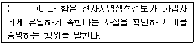
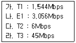

인터넷정보관리사-2급 (2008-06-01 기출문제)
1과목: 인터넷의 이해
1. 인터넷의 특징에 대한 설명으로 틀린 것은?
- TCP/IP를 기본 프로토콜로 사용한다.
- 전 세계를 대상으로 하는 글로벌 네트워크이다.
- 클라이언트/서버 기반으로 이루어져있다.
- 자원 표시에 사용되는 URL은 디렉토리를 구분하는 기호로 역슬래시(＼)를 사용한다.
(정답률: 92%)

2. IAB의 공문서 간행물로 컴퓨터 통신 및 인터넷과 관련된 상세한 절차와 주로 기술적인 분야의 표준규격을 제시하는 문서는?
- RFC(Request For Comments)
- IMR(Internet Monthly Report)
- FAQ(Frequently Asked Questions)
- RFP(Request For Proposal)
(정답률: 알수없음)
3. 도메인 네임과 기관의 성격을 연결한 것으로 틀린 것은?
- mil : 국방 조직
- go : 정부 기관
- ac : 입법 기관
- or : 비영리 기관
(정답률: 54%)
4. 아시아 태평양 지역의 IP 주소 할당 및 도메인 이름을 등록 하는 기관은?
- W3C
- RIPE-NIC
- IAB
- APNIC
(정답률: 73%)
5. IPv4에 대한 설명으로 틀린 것은?
- IP는 Internet Protocol의 약자이다.
- 0부터 255까지의 숫자를 사용할 수 있다.
- 64비트 체계이며, 16비트씩 4개의 옥텟으로 구성되어 있다.
- 각 옥텟(Octet)은 점(.)으로 구분한다.
(정답률: 75%)
6. 영문 도메인 구성에 대한 설명으로 틀린 것은?
- 도메인에 언더바(_)의 기호를 사용할 수 있다.
- 공백(space)은 허용하지 않는다.
- 도메인의 길이는 최소 2자에서 최대 63자까지 가능하다.
- 영문자의 대ㆍ소문자 구별이 없다.
(정답률: 80%)
7. 도메인(Domain)과 관련된 설명 중 올바른 것은?
- kr은 국가코드 최상위 도메인이다.
- 도메인 이름에 하이픈(-)은 절대 사용할 수 없다.
- biz, info, pro는 새로 만든 차상위 도메인이다.
- 도메인 이름은 전세계적으로 중복이 가능하여 고유한 주소로 사용되지 못한다.
(정답률: 64%)
8. 인터넷 홈페이지에 접속하기 위해 URL을 정확하게 입력했으나 접속되지 않아 Whois를 이용해 검색한 결과 해당 도메인은 등록되어 있었다. 이와 같은 상황을 설명한 내용으로 가장 적당하지 못한 것은?
- 도메인만 등록하고 실제로 홈페이지는 운영하고 있지 않다.
- 도메인명을 대문자로 입력했기 때문이다.
- 해당 홈페이지를 담고 있는 웹 서버가 현재 작동하지 않고 있다.
- 현재 사용하고 있는 PC의 인터넷 연결이 홈페이지 검색할 당시 끊어져 있었다.
(정답률: 36%)
9. 인터넷에 연결된 모든 컴퓨터에 부여되는 숫자로 된 고유의 주소를 무엇이라고 하는가?
- TCP/IP 주소
- Intra 주소
- IP 주소
- Add 주소
(정답률: 70%)
10. 전자우편 주소의 표기법으로 가장 올바른 것은?
- 사용자ID@도메인 이름
- IP주소@도메인 이름
- IP주소@사용자ID
- 사용자ID@포트번호
(정답률: 72%)
11. 전자우편의 용어에 대한 설명으로 틀린 것은?
- 동보 메일 : 하나의 메시지를 여러 사람에게 동시에 보낸다.
- POP Account : POP을 지원하는 서버에서 자신의 계정을 의미한다.
- Forward : 수신한 메시지를 원문 그대로 다른 사람의 전자우편 주소로 전송한다.
- Bcc : 첨부파일로 메시지에 덧붙여 보내는 파일을 의미한다.
(정답률: 60%)
12. Anonymous FTP 접속시 ID란에는 ‘Anonymous'를 입력한다. Password(비밀번호)란에는 일반적으로 무엇을 입력해야 하는가?
- 사용자의 주민등록번호 뒷자리
- 사용자의 전화번호
- 사용자의 전자우편 주소
- 사용자의 전자우편 주소 중 도메인 부분
(정답률: 알수없음)
13. 유명한 Anonymous FTP 사이트들은 디렉토리와 파일을 복사한 목록을 가진 또는 다른 FTP 사이트를 운영하여 접속자들을 분산시키고 있는데, 이러한 목적으로 운영되는 FTP 사이트를 무엇이라 하는가?
- Domain Site
- Recall Site
- Copy Site
- Mirror Site
(정답률: 42%)
14. 유즈넷에 대한 설명으로 맞는 것은?
- 주제에 따라 분류된 계층적 구조를 이루고 있다.
- 기사를 전송하기 위해 개발된 프로토콜은 Gopher이다.
- 유즈넷 서비스를 제공하는 역할을 하는 컴퓨터를 뉴스 리더라고 한다.
- FTP 서버에 있는 텍스트 정보를 검색해 주는 역할을 한다.
(정답률: 알수없음)
15. 뉴스그룹의 최상위 그룹과 설명이 잘못 짝지어진 것은?
- comp : 컴퓨터와 관련된 주제
- rec : 여가활동, 예술, 오락과 관련된 주제
- humanities : 비즈니스, 서비스 관련 주제
- news : 뉴스그룹 이용에 관한 토론 주제
(정답률: 75%)
16. 분신, 화신을 뜻하며 가상공간에서 사용자를 대신하는 것으로 최근에는 3D 입체 캐릭터도 등장하여 게임, 채팅 등에서 많이 사용하는 것은?
- 아바타(Avatar)
- 이모티콘(Emoticon)
- 스마일리(Smiley)
- 아이콘(Icon)
(정답률: 72%)
17. 다음 중 화상채팅시 가장 필요한 장비는?
- 디지타이저
- PC 카메라
- 플로터
- 아날로그 카메라
(정답률: 64%)
18. 전자상거래의 유형 중 인터넷쇼핑몰과 같이 기업과 소비자간의 거래 형태를 뜻하는 용어는?
- B2B
- G2C
- B2C
- G2B
(정답률: 72%)
19. 가정이나 소규모 사무실에서 인터넷과 같은 통신 네트워크를 이용해 최소한의 인력과 비용으로 소득을 올리는 사업형태를 뜻하는 용어는?
- ERP
- EDI
- CRM
- SOHO
(정답률: 알수없음)
20. 전자서명법에서의 용어 정의 중, 다음 ( )에 가장 적합한 단어는 무엇인가?

- 인증
- 가입
- 지정
- 보장
(정답률: 73%)
21. Telnet에서의 네티켓으로 가장 올바른 것은?
- 멀티미디어 정보만 선별하여 전송하며, 전송속도나 효율적인 면은 고려하지 않아도 된다.
- 파일을 송수신시는 업무시간에 하는 것이 가장 좋다.
- 공지사항은 호스트의 서비스 내용과 특별사항을 안내하기 때문에 반드시 읽는 것이 좋다.
- 용량이 큰 파일은 압축 없이 올리는 것이 올바른 행동이다.
(정답률: 74%)
22. 인터넷 카페란 인터넷 동호회, 향우회, 동창회 등과 같이 사이버 공간에서 비슷한 관심사를 가진 사람들끼리 다양한 만남이 이루어질 수 있도록 인터넷 포털 사이트에서 제공하는 커뮤니티이다. 이러한 인터넷 카페가 미치는 긍정적 영향으로 거리가 먼 것은?
- 관심 분야 정보 공유
- 전문 지식 획득 가능
- 극단적인 다수의 동호회 생성
- 공통의 관심사를 갖는 동호회 생성
(정답률: 60%)
23. 인터넷 대화방을 이용할 때의 네티켓으로 적절하지 못한 것은?
- 만나고 헤어질 때에는 인사를 한다.
- 간결한 문장을 사용한다.
- 친근감을 조성하기 위해 속어, 약어 등의 표현을 많이 사용한다.
- 대화방의 성격에 맞는 내용을 이야기한다.
(정답률: 85%)
24. 다음 중 저작권을 침해하는 행위에 해당되는 것은?
- 시사보도를 위한 이용
- 재판절차 등에서의 복제
- 학교 교육 목적을 위한 이용
- 사설학원 등에서 영리를 목적으로 하는 이용
(정답률: 64%)
25. 불건전 정보 억제와 관련 있는 내용이 아닌 것은?
- 정보통신윤리위원회
- 인터넷 익스플로러의 내용관리자
- 스팸메일
- 수호천사
(정답률: 알수없음)
26. 컴퓨터프로그램보호법에서 ‘프로그램을 발행하거나 이를 공중(公衆)에게 제시하는 행위’는 무엇인가?
- 발행
- 공표
- 복제
- 개작
(정답률: 55%)
27. 컴퓨터의 구성요소 중 주기억장치에 해당하는 것은?
- ROM
- CD-ROM
- 자기테이프
- 하드디스크
(정답률: 19%)
28. 본래는 어떤 사람이나 조직에 관한 정보를 수집하는데 도움을 주는 기술을 뜻한다. 광고나 마케팅을 목적으로 배포하는 게 대부분으로, 다른 사람의 컴퓨터에 잠입하여 중요한 개인정보를 빼가는 소프트웨어를 뜻하는 용어는?
- 데몬
- 백도어
- 스파이웨어
- 패치
(정답률: 알수없음)
29. 외부로부터 입력되는 일련의 데이터들을 모아 두었다가 일정한 시간이 되면 이들 작업들을 미리 정해진 순서에 따라 차례대로 처리하는 방식은?
- 일괄처리
- 다중 프로그래밍
- 시분할처리
- 다중처리
(정답률: 55%)
30. 그래픽 편집기로 가장 거리가 먼 것은?
- Flash
- 페이트샵
- 알송
- 포토샵
(정답률: 84%)
31. VDSL에 대한 설명으로 틀린 것은?
- 기존 전화선 대신 광케이블을 설치해야 서비스를 이용할 수 있다.
- ADSL보다 속도가 빠르다.
- ‘Very high-data rate Digital Subscriber Line’의 약자이다.
- VOD, 멀티미디어, 원격교육 등 대용량 데이터 처리에 적합하다.
(정답률: 40%)
32. 인터넷에 접속하기 위한 장비와 통신회선 등을 갖추어 놓고 개인이나 회사들에게 인터넷 접속 서비스, 웹 호스팅 서비스 등을 제공하는 곳은?
- ERP
- EDI
- CTI
- ISP
(정답률: 67%)
33. 전용회선의 종류와 최대 전송속도가 맞게 연결된 것을 모두 고른 것은?

- 가, 나, 다
- 나, 다, 라
- 가, 다, 라
- 가, 나, 라
(정답률: 54%)
2과목: 인터넷 자원 탐색
34. 전용선을 이용한 인터넷 접속과 가장 관련이 없는 것은?
- Hub
- Router
- S-Card
- Repeater
(정답률: 39%)
35. 케이블 TV망을 통해 인터넷에 접속하는 방식에 대한 설명으로 틀린 것은?
- 동일한 Cell내에서 동시에 접속한 이용자가 많아도 전송속도는 전혀 감소되지 않는다.
- 일반적으로 전화모뎀이나 ISDN에 비해 고속의 전송속도를 제공한다.
- 케이블 모뎀을 이용하기 때문에 전화선의 연결 여부와는 관계가 없다.
- 24시간 언제라도 인터넷을 사용할 수 있다.
(정답률: 36%)
36. URL과 관련된 설명으로 틀린 것은?
- Uniform Resource Locator의 약자이다.
- HTTP의 Well-Known 포트번호는 70번이다.
- 프로토콜, 호스트 주소, 디렉토리 부분으로 구성된다.
- 웹 사이트나 웹 페이지에 포함되어 있는 텍스트나 이미지 등과 같은 정보의 위치를 알려준다.
(정답률: 91%)
37. 웹 브라우저가 한 번 방문했던 페이지의 내용을 컴퓨터에 저장했다가 다음 방문할 때 그 페이지를 불러오는 시간을 줄이면서 네트워크의 부담을 덜어주는 장소를 뜻하는 용어는?
- Intra
- Push
- Pull
- Cache
(정답률: 59%)
38. 웹 브라우저의 플러그인에 대한 설명으로 가장 적합하지 못한 것은?
- 웹 브라우저가 자체적으로 실행하지 못하는 파일형식들을 지원하기 위해서 설치되는 외부 보조 프로그램이다.
- 웹 브라우저의 속도를 빠르게 한다.
- 일반적으로 웹 브라우저와 함께 실행되나 일부 단독으로 실행이 가능한 프로그램도 있다.
- 내장되어 있는 프로그램의 예로는 Windows Media Player가 있다.
(정답률: 30%)
39. 컴퓨터 분야에서 각각 분리된 두 개의 프로그램 사이에서 매개 역할을 하거나 연동시켜 주는 프로그램을 무엇이라 하는가?
- 프리웨어
- 쉐어웨어
- 그룹웨어
- 미들웨어
(정답률: 알수없음)
40. HTML 태그 중 문자를 타자로 친 것처럼 표현 하기 위한 태그는?
- <tt></tt>
- <td></td>
- <u></u>
- <b></b>
(정답률: 알수없음)
41. <img src=“그림”>이라는 HTML 태그에 그림에 대한 설명을 나타내고자 할 때 사용하는 속성은?
- align
- alt
- em
- code
(정답률: 알수없음)
42. 여러 개의 프레임으로 작성된 문서에서 하이퍼링크 시킨 문서를 새로운 창에서 열게 하기 위한 태그는?
- target=“_blank”
- target=“_parent”
- target=“_bottom”
- target=“_self”
(정답률: 20%)
43. 홈페이지 저작도구에 대한 설명으로 틀린 것은?
- 나모 웹 에디터는 스타일 시트, 자바 스크립트 기능을 제공하는 웹 에디터이다.
- 프론트페이지는 마이크로소프트사에서 개발되었다.
- Adobe사에서 개발된 드림위버는 다이나믹 HTML 제작 기능이 뛰어나 동적인 홈페이지를 제작하는데 유용하다.
- 메모장으로 직접 Markup 태그를 입력하여 홈페이지를 만들 수 있다.
(정답률: 20%)
44. 다음 확장자에 대한 설명으로 틀린 것은?
- doc : Microsoft Word 문서를 저장한 워드프로세서 파일
- gul : 워드패드 문서를 저장한 워드패드 파일
- xls : 엑셀 문서를 저장한 엑셀 파일
- hwp : 글 문서를 저장한 워드프로세서 파일
(정답률: 37%)
45. 프로그램을 개발하여 공개된 이후에 발견한 오류들에 대하여 추가적인 보완을 할 수 있도록 사용자에게 배포되는 후속 프로그램을 지칭하는 것은?
- 패치(Patch)
- 버그(Bug)
- 감사(Audit)
- 리콜(Recall)
(정답률: 알수없음)
46. 시스템 관리자나 유지보수 프로그래머들의 액세스 편의를 위해 시스템 설계자가 고의로 만들어 놓은 시스템의 보안이 제거된 비밀통로를 무엇이라 하는가?
- Trojan Door
- Back Door
- Gateway
- Ethernet Door
(정답률: 65%)
47. 웹 서버에 대한 설명으로 틀린 것은?
- 인터넷 환경에서 클라이언트가 요청한 정보를 응답하여 제공하는 기능을 담당한다.
- 웹 서버로는 아파치와 엔터프라이즈 서버등이 있다.
- 웹 서버는 정해진 110포트 이외의 다른 포트번호는 사용할 수 없다.
- 웹 서버가 클라이언트의 요청에 응답을 한 뒤에는 클라이언트/서버로서의 연결이 종료된다.
(정답률: 69%)
48. 프로토콜에 따른 URL 표기형식으로 잘못된 것은?
- http://www.ihd.or.kr
- telnet.telnet.cholli.net
- news:han.test
- mailto:hbh@ihd.or.kr
(정답률: 알수없음)
49. 싸이월드, 다음 카페, 네이버 카페 등 개인을 위한 정보공간 제공과 회원 상호간의 정보 공유 기능까지 제공하는 서비스가 치열한 경쟁을 벌이고 있는데, 이러한 서비스가 속하는 영역은?
- Computing 서비스
- Composer 서비스
- Customer 서비스
- Community 서비스
(정답률: 알수없음)
50. 멀티미디어의 실현배경이라고 보기 가장 어려운 것은?
- 아날로그 기술 발달
- 영상 압축기술 발달
- 고성능 컴퓨터 출현
- 효과적인 인터페이스 기술의 발달
(정답률: 58%)
51. 다음 중 이미지 파일의 확장자에 해당하지 않는 것은?
- JPG
- BMP
- GIF
- AVI
(정답률: 알수없음)
52. MPEG1의 오디오 압축기술의 하나로, 음반 CD에 가까운 음질을 유지하면서 CD의 약 50배로 압축이 가능한 것은?
- mid
- wav
- mp3
- wma
(정답률: 50%)
53. 다음 중 텍스트 기반의 웹 브라우저는?
- Mosaic
- Cello
- Samba
- Internet Explorer
(정답률: 알수없음)
54. 인터넷 익스플로러 6.0에서 웹 서버에 접속하여 해당 페이지를 다시 전송받고자 할 때 사용하는 표준 단추는?
- 뒤로
- 중지
- 새로고침
- 홈
(정답률: 70%)
55. 인터넷 익스플로러 6.0에서 임시 인터넷 파일을 삭제하는 방법으로 올바른 것은?
- [편집]→[잘라내기]에서 삭제
- [편집]→[모두선택]에서 삭제
- [도구]→[인터넷옵션]→[보안]에서 삭제
- [도구]→[인터넷옵션]→[일반]에서 삭제
(정답률: 47%)
56. 인터넷 익스플로러 6.0에서 데이터의 전송 상태와 웹 페이지에서 하이퍼링크된 곳에 마우스를 가져갔을 때 링크된 URL 정보를 보여주는 곳은?
- 메뉴 표시줄
- 상태 표시줄
- 주소 표시줄
- 제목 표시줄
(정답률: 29%)
57. 인터넷 익스플로러 6.0에서 접속했었던 웹 페이지의 내용을 저장해 두었다가, 인터넷에 연결되지 않은 상태에서도 해당 페이지를 다시 읽을 수 있게 해주는 기능은 무엇인가?
- 오프라인
- 열기
- 검색
- 동기화
(정답률: 42%)
58. 인터넷 익스플로러 6.0에서 이미지는 제외하고 텍스트 정보만 빠르게 전송해서 보고자 할 때 설정해야 하는 곳은?
- [파일]→[보내기]
- [보기]→[도구모음]→[사용자지정]
- [도구]→[인터넷옵션]→[고급]
- [도구]→[인터넷옵션]→[보안]
(정답률: 42%)
59. 인터넷 익스플로러 6.0의 [도구] 메뉴에서 [메일 및 뉴스]의 하위 메뉴가 아닌 것은?
- [메일 읽기]
- [새 메세지]
- [링크 보내기]
- [관련 링크 표시]
(정답률: 알수없음)
60. 인터넷 익스플로러 6.0의 자동완성 기능에 대한 설명으로 틀린 것은?
- 이전에 입력된 내용에서 첫 글자가 같으면 자동으로 전체를 완성시켜 보여준다.
- 자동완성 사용대상은 웹 주소, 폼, 폼에 사용할 사용자 이름과 암호이다.
- [도구]→[인터넷옵션]→[내용]에서 설정할 수 있다.
- 웹 주소 항목은 [도구]→[인터넷옵션]→[보안]에서 삭제할 수 있다.
(정답률: 알수없음)
61. 인터넷 익스플로러 6.0에서 등급을 사용하여 볼 수 있는 인터넷 내용을 제한하여 폭력적이거나 선정적인 단어들을 사용하는 경우 접근을 금지하는 기능을 설정 할 수 있는 곳은?
- [인터넷 옵션]→[보안]→[사용자 지정 수준]
- [인터넷 옵션]→[보안]→[기본 수준]
- [인터넷 옵션]→[내용]→[내용관리자]
- [인터넷 옵션]→[내용]→[개인정보]
(정답률: 42%)
62. 인터넷 익스플로러 6.0에서 사용되는 단축키와 설명의 연결이 잘못된 것은?
- 인쇄 : Ctrl + P
- 모두선택 : Ctrl + A
- 전체화면 : F11
- 새로고침 : Ctrl + I
(정답률: 80%)
63. 검색엔진에서 키워드 검색시 2개 이상의 연속된 단어를 큰 따옴표(“ ”)로 묶어서 하나의 문자열로 검색하는 방법은?
- 구문검색(Phrase Search)
- 우선연산(Precedence)
- 절단검색(Truncation)
- 인접연산자(Proximity Operator)
(정답률: 29%)
64. 효율적인 정보검색을 위한 기본 원칙에 해당 하지 않는 것은?
- 검색엔진에서 지원하는 연산자의 종류와 기호를 정확히 파악한다.
- 정보의 형태에 따라 적절한 검색엔진을 활용한다.
- 다양한 검색엔진으로 각각의 특성을 이용하여 정보를 검색한다.
- 개비지(Garbage)를 최대화할 수 있도록 검색한다.
(정답률: 알수없음)
65. 네이버 검색엔진에서 현재 지원하는 서비스가 아닌 것은?
- 뉴스검색
- 지도검색
- 웹 문서검색
- 뉴스그룹 삭제
(정답률: 75%)
66. 검색엔진 중 KTH에서 운영하고 있으며 웹메일, 사용자들끼리 묻고 답하는 ‘지식바다’ 서비스를 운영하고 있는 것은?
- 엠파스
- 다음
- 파란
- 네이버
(정답률: 50%)
3과목: 인터넷 윤리
67. 자체적으로 데이터베이스를 구축하지 않는 검색엔진으로, 입력된 키워드를 가지고 여러개의 검색엔진을 검색하여 검색된 결과만을 사용자에게 보여주는 것은?
- 주제별 검색엔진
- 메타 검색엔진
- 단어별 검색엔진
- 하이브리드형 검색엔진
(정답률: 알수없음)
68. 웹 제작자들이 위치와 빈도를 높이기 위해 한 페이지에 같은 키워드를 반복하여 입력하는 행위를 뜻하는 용어는?
- 문자열 변수(string variable)
- 오류 중복(error multiplication)
- 스푸핑(Spoofing)
- 스패밍(Spamming)
(정답률: 알수없음)
69. 불용어에 대한 설명으로 틀린 것은?
- 불용어란 키워드로 사용될 경우에 무시해 버리는 단어나 문자열을 의미한다.
- 한글 불용어는 명사, 형용사, 동사 등이 있다.
- 검색엔진이 데이터베이스를 구축할 때 불용어는 색인에서 제외한다.
- 영어 불용어에는 am, that, you, but, for, with 등이 있다.
(정답률: 40%)
70. 시소러스(Thesaurus)에 대한 설명 중 가장 올바른 것은?
- 공식 사이트 목록
- 컴퓨터 경향에 대한 최신 정보를 담고 있는 사전
- 불용어 사전
- 정보검색에서 사용되는 주요 용어들간의 관계를 정리한 용어집
(정답률: 알수없음)
71. 인터넷 상에 있는 웹 사이트나 뉴스그룹을 주기적으로 돌아다니며 자동으로 정보를 수집하는 프로그램을 무엇이라고 하는가?
- Seeker
- Robot
- SafeNet
- Browser Explorer
(정답률: 84%)
72. 인터넷 정보검색에서 고려해야 할 사항으로 가장 거리가 먼 것은?
- 검색어가 속하는 해당 주제 분야를 유추해 본다.
- 키워드 검색을 할 것인지 분류 디렉토리 검색을 할 것인지 결정한다.
- 일관성 있고 정확한 검색을 위해 한가지 검색엔진만 사용한다.
- 키워드를 선정할 때는 주제의 특성에 맞는 동의어나 유사어를 고려한다.
(정답률: 알수없음)
73. 검색엔진 구글에 대한 설명으로 틀린 것은?
- 구글의 한국어 주소는 http://kr.google.com/ 이다.
- 구글 툴바 서비스를 제공한다.
- 레리 페이지와 세르게이 브린에 의해 설립 되었다.
- 검색결과가 새 창으로 나타나지 않게 할 수 있다.
(정답률: 알수없음)
74. 야후 코리아에서 제공하는 서비스가 아닌 것은?
- 검색어 자동완성
- 검색화면 전체저장
- 스킨 컬러 설정
- 내가 찾은 검색어 저장
(정답률: 19%)
75. 인터넷 검색엔진을 이해하는 가장 올바른 태도는 무엇인가?
- 인터넷 검색엔진의 검색결과가 나타났을 때 상위에 위치한 것은 가장 신뢰성 있고 정확한 정보이다.
- 검색엔진의 로봇 프로그램이 수집한 자료, 네티즌이 등록한 자료, 운영자들이 선별한 자료 등을 검색할 수 있다.
- 인터넷 검색엔진을 이용하여 세상의 모든 정보를 검색할 수 있다.
- 검색엔진은 기업의 전문 회계자료 검색, 나라별 대외비 검색 등 전문적인 분야에 대한 정보를 검색하는 유일한 도구이다.
(정답률: 79%)
76. 정보에 대한 설명으로 틀린 것은?
- 1차 정보 중에서 필요한 정보만을 효율적으로 선택할 수 있도록 사용하는 도구정보를 2차 정보라고 한다.
- 색인지, 도서, 목차지는 1차 정보에 속한다.
- 정보는 형태가 없으며 추상적인 객체이면서도 그 영향력은 구체적이고 현실적이다.
- 정보는 한시적으로 시간이 지남에 따라 그가치가 퇴색될 가능성이 크다.
(정답률: 47%)
77. 전자상거래는 “전자적 방식을 이용하여 가상공간에서 이루어지는 거래행위”라고 정의할 수 있는데 이 전자상거래의 장점으로 잘못 기술된 것은?
- 시간과 공간의 제약을 받지 않는다.
- 다국적 언어로 사이트 구현이 가능하여 글로벌 마케팅이 가능하다.
- DB 마케팅을 통해 개인의 정보가 노출될 수 있다.
- 소비자들은 정보 수집이 쉽고 가격 비교를 하여 합리적인 구매가 가능하다.
(정답률: 70%)
78. 검색엔진을 이용하여 ‘방송통신’이라는 단어를 검색한 결과, 검색엔진 데이터베이스에 400개의 정보 중 적합한 정보가 80개가 있고, 적합한 정보 중 40개가 검색되었다면, 이 검색 결과의 재현율은 몇 %인가?
- 10%
- 40%
- 50%
- 60%
(정답률: 58%)
79. 국내에서 개발된 검색엔진으로 올바르게 짝지어진 것은?
- 야후, 엠파스
- 구글, 야후
- 엠파스, 파란
- 파란, 라이코스
(정답률: 70%)
80. 정보검색의 목적으로 가장 올바른 것은?
- 정보의 바다를 서핑하면서 여러 사이트에 가입하는 것
- 대량의 정보 중 필요한 정보를 신속 정확하게 찾는 것
- 전문 데이터베이스를 이해하는 것
- 각종 검색엔진의 특징을 파악하는 것
(정답률: 50%)